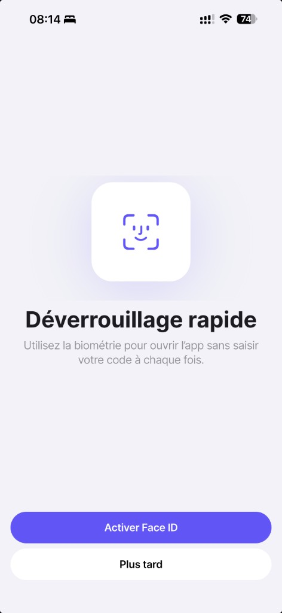
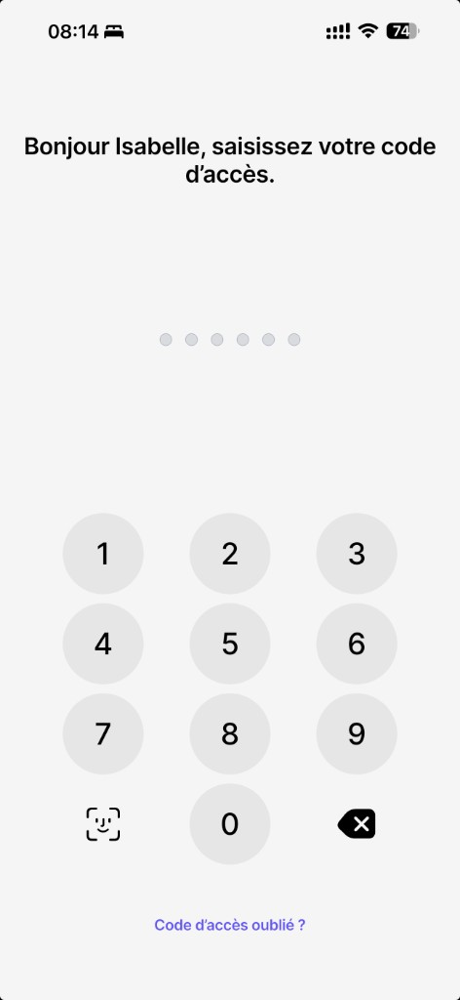
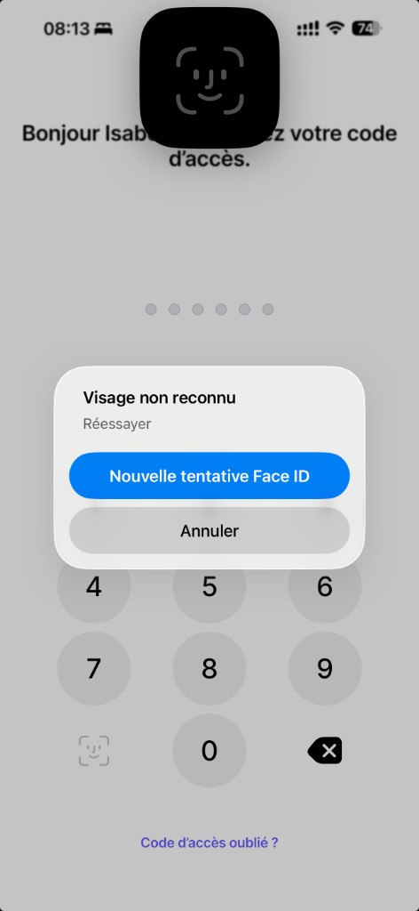

Face ID / Fingerprint — Local-First Authentication for Modern Finance
Security without friction
The problem
Modern authentication is broken
Password fatigue reduces both security and engagement
SMS OTP and PINs create fragile, interrupt-driven habits
Backend sessions are over-trusted, under-secured
Banks force a trade-off: friction vs. safety
The gap
Users expect seamless security. They get complexity instead.
Market shift
The industry is moving
Devices are now the strongest identity anchor
Biometrics are standard across iOS and Android
Users trust Face ID more than passwords
Reality check
Most financial apps still behave like 2015.
Vision
Make security invisible
The device becomes the default trust layer
Biometrics replace passwords for daily access
The network handles risk — not basic unlock
Principle
Security should feel instant, not negotiated.
Core principles
What we optimize for
Local-first authentication
No server call to open the app.
Separation of concerns
Unlock is not authorization is not risk.
Adoption
Security only works if users keep it enabled — adoption-driven design.
Architecture
Three independent layers
1. Device layer
Face ID / fingerprint. OS-native, hardware-backed where available.
2. Local engine
PIN fallback, biometric state machine, user preference control.
3. Backend layer
Authorization, limits, compliance, step-up only when required.
Core innovation
State machine
A simple but powerful model:
State
Meaning
never_seen
No decision yet
enabled
Biometric active
skipped
User declined
unavailable
No hardware
Why it matters
Eliminates UX ambiguity
Enables controlled re-engagement
Prevents loops and dead states
Unlock experience
Designed for speed and certainty
App opens
Passcode screen appears
Face ID auto-triggers when policy allows
PIN fallback always available
Promise
No network. No delay. No friction.
Onboarding
Security is guided, not forced
Clear first exposure
Explicit choices: enable, skip, unavailable
Persistent local state
Smart re-prompt strategy
Outcome
Adoption is engineered, not assumed.
User control
Profile integration
Dedicated Security section
Authentication Methods screen
Face ID toggle with confirmation on disable
Principle
Users control security without breaking it.
Product flow
End-to-end journey — how it works
From first opt-in to daily unlock and biometric failure: four screens from the live app (iOS).
UI copy in French; architecture is language-agnostic.
Step 1 — Onboarding

First exposure: user activates Face ID (system prompt) or defers. Local preference and onboarding state are persisted — no backend required to unlock later.
Step 2 — Profile
Security → Authentication Methods: the toggle reflects and edits local biometric preference — the control surface for Face ID in production.
Step 3 — Unlock

Passcode gate: Face ID can auto-trigger when policy allows; the Face ID key offers a manual path; PIN remains the universal fallback — all device-local.
Step 4 — Fallback

If biometrics fail: explicit modal — retry Face ID or cancel to enter PIN. No silent failure; user always has a clear next step.
This flow is orthogonal to backend step-up and risk policies: local unlock proves device + presence; sensitive operations can still require additional server-side checks.
Security model
We separate what others mix
Local authentication
Device possession and user presence for routine access.
Backend authorization
Account rights and transaction limits.
Step-up
High-risk actions only. Unlocking the app is not approving a transaction.
UX strategy
Clarity drives retention
Assertive prompting increases adoption
No infinite loops
No silent failures
Immediate feedback
Truth
Security that users understand is security that users keep.
Failure handling
Every path is intentional
Biometric failure to PIN fallback
User cancel: no state corruption
Device incompatible: no fake interactions
Backend sync failure: local access continues
Rule
Local truth wins.
Competitive positioning
Compared to incumbents
Traditional banks
Faster access, stronger local guarantees, better user trust.
Neobanks
Cleaner architecture, true layer separation, more audit-friendly.
Positioning
Security becomes a product advantage.
Why it wins
Investor metrics narrative
Higher biometric adoption
Lower login friction
Stronger real-world security posture
Clear regulatory story
Framing
This is not just UX — it is infrastructure.
Roadmap
What comes next
Device trust scoring
Session and device management
Transaction-level step-up
Behavioral security layers
Scale
Same foundation, extended across the platform.
Conclusion
The new standard
Security should be invisible at the moment of use
Biometrics are the default users already expect
Local-first is the winning architecture for regulated finance
Closing
We are building the new standard for financial authentication.